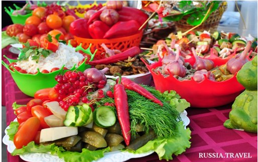

Gastronomic festival,
Astrakhan region
The first international forum-festival "Gastronomic roads of the Great Silk Road. Traveling for taste, Astrakhan 2017 "was held in the Astrakhan region from July 7 to 9 with the support of the Federal Agency for Tourism and the World Tourism Organization (UNWTO).
This bright event has become a platform for a dialogue between representatives of the authorities and tourist industry from the regions of Russia and foreign countries, as well as professional associations, restaurateurs, hoteliers, chefs, food and beverage manufacturers, scientists and artists on the development of gastronomic tourism and the popularization of gastronomic tours on the cross-border tourist route "Silk Road".
This bright event has become a platform for a dialogue between representatives of the authorities and tourist industry from the regions of Russia and foreign countries, as well as professional associations, restaurateurs, hoteliers, chefs, food and beverage manufacturers, scientists and artists on the development of gastronomic tourism and the popularization of gastronomic tours on the cross-border tourist route "Silk Road".
